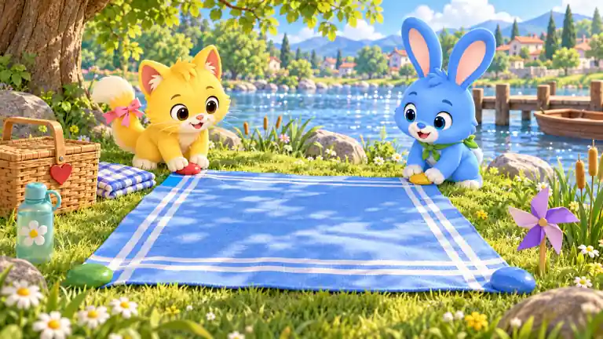
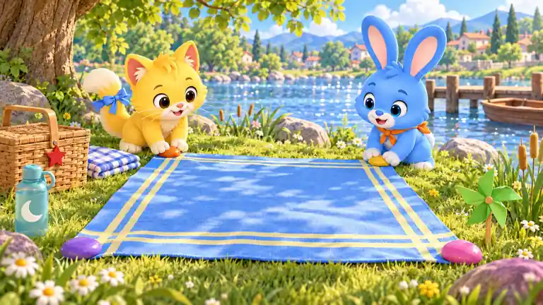
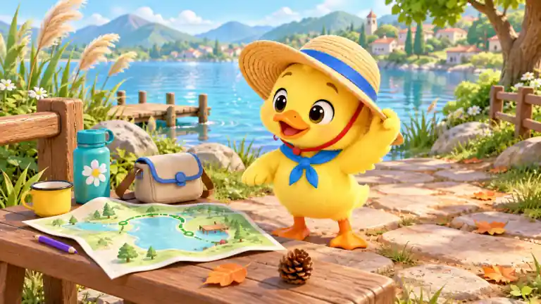
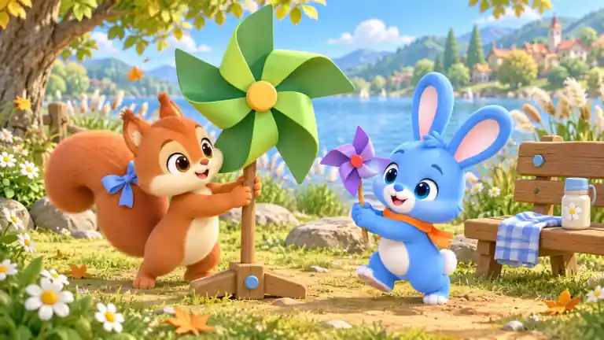
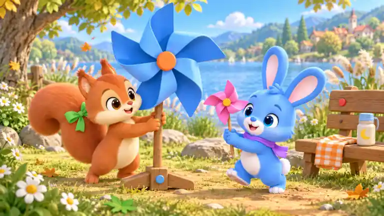

内置image_gen生成。按实际画面复杂度人工复核：低043/046/049，中041/050，高042/044/045/047/048。以下为768×432、WebP质量30预览。源图未接入游戏；B展示全部候选。
大面积野餐布形成清晰主区域，单角色与少量周边物件，湖岸背景适中。
布蓝格变绿格；红角夹变紫；篮绿带变蓝；垫星变月；兔蓝巾变橙；瓶心变花；橙叶变绿；紫杯变黄；松果移除；篮蓝扣变红
双角色、四角石块、篮子、风车、码头与繁茂湖岸形成多区搜索。


红石变紫；黄石变橙；绿石变蓝；蓝石变粉；布白边变黄；猫粉尾饰变蓝；兔绿巾变橙；篮心变星；瓶花变月；紫风车变绿
星伴、风铃架和栏杆三个大形体；湖面与天空提供大面积留白。
蓝圆变紫；红心变菱形；绿星变橙；黄绳变蓝；紫坠变绿；蓝木钮变红；红旗变绿；粉脸颊变蓝；橙叶变绿；栏月变花
地图本身细节较多，加上帽子、桌面用品、石径、码头及村庄湖景，实际画面偏复杂。

帽蓝带变绿；红帽带变紫；鸭蓝巾变橙；地图绿线变红；瓶花变月；包蓝扣变黄；橙叶变绿；紫笔变红；黄杯变蓝；松果移除
双角色、多组绳结、木板纹理、码头用品和多层湖岸背景，搜索信息丰富。
熊绿巾变紫；红绳变橙；兔蓝绳变绿；黄上桩变红；紫下桩变蓝；板星变月；篮心变花；巾绿纹变蓝；瓶月变星；橙叶变绿
单角色、三面大旗与画板；湖面天空留白充足，周边物品极少。
红旗变紫；蓝旗变橙；绿旗变粉；黄顶钮变蓝；画板紫边变绿；板内三旗同步换色；粉尾饰变蓝；瓶花变月；橙叶变绿；蓝地标变红
双角色、大小风车、长椅与较密的花草湖岸背景，实际成图高于原计划中档。


大绿叶片变蓝；大黄轴变橙；小紫叶片变粉；小红轴变黄；松鼠蓝饰变绿；兔橙巾变紫；瓶花变月；布蓝格变橙格；橙叶变绿；椅蓝钮变红
遮阳顶、双角色、座椅织物、书篮鞋巾以及码头村庄构成多层细节。
棚蓝纹变绿；猫粉尾饰变蓝；鸭蓝巾变橙；杯星变月；书红封变紫；篮心变星；绿鞋变蓝；巾橙纹变紫；瓶花变月；紫垫变黄
单桌、跃跃、星伴和小风车；背景主要为平静湖面与天空。
卡蓝边变绿；画中红旗变紫；画中黄铃变蓝；风车绿叶变橙；紫轴变蓝；兔橙巾变绿；蓝笔变红；桌心变星；橙叶变绿；杯月变花
双角色围绕一个收纳袋，长椅用品有限，背景虽丰富但主活动集中。
红夹变蓝；绿袋变紫；袋星变心；布蓝格变橙格；猫粉尾饰变蓝；兔橙巾变绿；瓶花变月；篮心变星；橙叶变绿；椅蓝钮变黄